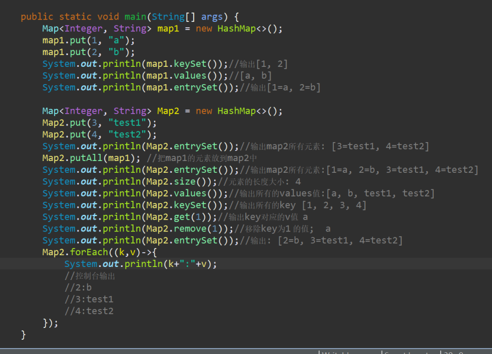

昨天和同事聊天,说把map所有的值遍历出来; 突然脑壳卡住了;
所以特意巩固了下; 有什么错误,欢迎评论纠正;
Map的常用方法
map.put(); 添加;
map.get(key) ; 获取对应key的values;
map.values() ; 获取map中所有的values值;
map.keySet(); 获取所有的key值
map.size(); 元素长度的大小
map.entrySet() ;获取map中的所有元素, k1=v2,k2=v2,.......形式输出;
map.remove(key) ; 移除相应的key的元素;
map.putAll(map1); 把map1的元素放到map中;
在编写过程中,发现一个现象: 如果两个map的(k.v) 类型不一致, 如map ---(1,"a"); map1---("1","b");
执行的map.putAll(map1); ----map输出结果为:
[1=a, 1=b]
JDK8新特性新增的lambda表达式遍历Map的方法——Map.forEach();
Map.forEach((k,v)->{
System.out.println(k+":"+v);
});
案例如下:
